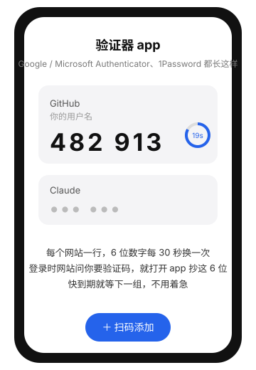

新人第一天
你好，欢迎加入 Ali Matrix。这一页是你在拥有任何账号之前唯一需要看的东西。按顺序做，每一步都有怎么确认和不行找谁。全部做完大约 1 到 2 小时，之后你就有一个 AI 助手带着你做后面的所有事，不需要再找人教。
0准备
- 一台自己的电脑，macOS、Windows、Linux 都行。
- 一个能收邮件的邮箱。用哪个邮箱注册各种账号，以拉你进群的同事告诉你的为准，本页下面统称"你的引路人"。
- 一个能上 Telegram 的手机或电脑，我们的沟通都在 Telegram 里。
用浏览器打开 github.com 和 claude.ai。两个都能正常显示就行；如果一直转圈、打不开或很慢，先别自己折腾，问引路人拿公司的网络方案，拿到再往下走。
后面注册 GitHub 要开"两步验证"：登录时除了密码，还要输一个手机上显示的 6 位数字。这个数字由验证器 app 生成。三选一，都免费：
- Google Authenticator：iPhone 在 App Store 搜这个名字，Android 在应用商店搜；图标是灰色的星号。
- Microsoft Authenticator：同样搜名字，蓝色图标。
- 1Password 或你已经在用的密码管理器，如果它支持"一次性密码"也可以。

装好先打开一次，允许它使用相机（扫码用），然后放着，下一步会用。
不行找谁：你的引路人。
1注册 GitHub 并开两步验证
GitHub 是放代码和流程记录的网站，也是公司的"身份系统"：你能看什么、改什么，由它决定。
- 打开 github.com/signup。
- 依次填：邮箱（第 0 步那个）、密码（至少 8 位，存进密码管理器）、用户名。用户名以后会公开显示、也是同事认你的名字，建议用名字拼音，只能用字母、数字和连字符。
- 它会让你做一个"我不是机器人"的小游戏，按提示完成。
- 去邮箱收一封验证码邮件，把码填回去。问你几个偏好问题，随便选或跳过。

公司组织强制两步验证，不开的话后面加不进来。四个画面，一步步来：

- 登录后打开 github.com/settings/security，找到 Two-factor authentication，点绿色按钮 Enable two-factor authentication。
- 它显示一个二维码。打开手机上的验证器 app，点"＋"或"扫码添加"，对准电脑屏幕扫。扫完 app 里会多出一行 GitHub，下面是 6 位数字。
- 把 app 上此刻显示的 6 位数字填进网页的输入框，点 Continue。数字每 30 秒变一次，快到期就等下一组。
- 它给你一页 Recovery codes（恢复码）。点 Download 或 Copy，存进密码管理器或一个安全的地方。手机丢了只能靠它找回账号，不要只截图放相册。然后点确认完成。
卡住：验证码总提示错误，多半是手机时间不准，去手机设置里把时间改成自动获取。
2装三个基础工具
终端是用文字命令操控电脑的窗口，AI 助手就住在里面。要装的三个工具：git 记录代码修改，Node.js 运行一些工具，gh 让终端能操作 GitHub。先在上面选你的电脑系统。

- 打开"终端"：按 ⌘ + 空格，输入 终端，回车。出现一个黑底或白底的窗口。
- 装 Homebrew（macOS 上装软件的工具）。点下面的"复制"，回到终端 ⌘ + V 粘贴，回车：
它会要你的电脑登录密码，输入时屏幕不显示任何字符，这是正常的，输完回车。中途可能弹窗让你装"命令行开发者工具"，点安装，等它装完（可能十几分钟）。最后它会打印两行以/bin/bash -c "$(curl -fsSL https://raw.githubusercontent.com/Homebrew/install/HEAD/install.sh)"echo和eval开头的命令让你执行，照做。 - 装三个工具，一行搞定：
brew install git node gh
- 打开 PowerShell：按 Win + X，选"终端（管理员）"或"Windows PowerShell（管理员）"；找不到就在开始菜单搜索 PowerShell，右键"以管理员身份运行"。弹出"是否允许此应用更改"选是。
- 先看有没有
winget：
打印出版本号就跳到第 3 条。提示"无法识别"就去 Microsoft Store 搜"应用安装程序"，点更新或安装，装完关掉 PowerShell 重开再试。winget --version
Microsoft Store 里叫"应用安装程序"，winget 就在里面。 - 依次执行三行，每行回车等它装完再下一行，中间要你确认协议就按 Y 回车：
winget install --id Git.Git -ewinget install --id OpenJS.NodeJS.LTS -ewinget install --id GitHub.cli -e - 装完关掉 PowerShell 重新打开，这次不需要管理员。
winget 实在装不上？用官网安装包
三个都是"下载、双击、一路下一步"，装完重开 PowerShell：
- Git：git-scm.com/download/win，点 Click here to download。
- Node.js：nodejs.org，选 LTS，系统选 Windows，下载 .msi。
- gh：cli.github.com，Download for Windows。


- 打开终端，执行（会要你的密码，输入不显示是正常的）：
sudo apt update && sudo apt install -y git curl - 装 nvm（管理 Node 版本的工具），再装 Node：
关掉终端重新打开，再执行：curl -o- https://raw.githubusercontent.com/nvm-sh/nvm/master/install.sh | bashnvm install --lts - gh 按官方说明安装：install_linux.md，Ubuntu 一节复制整段执行即可。
git --version && node --version && gh --version常见问题：提示 command not found 或"无法识别"，九成是没重开终端；Windows 还不行就重启电脑。
3让终端登录 GitHub
让终端里的 gh 认识你的 GitHub 账号，以后拉代码、装公司流程都靠它。
gh auth login -h github.com -p https -w它会一问一答，用键盘上下键选、回车确认：
- Where do you use GitHub? 选 GitHub.com
- What is your preferred protocol? 选 HTTPS
- Authenticate Git with your GitHub credentials? 选 Yes
- How would you like to authenticate? 选 Login with a web browser
- 它显示一个 8 位码，例如
ABCD-1234，记下来，回车。浏览器会打开 GitHub 的登录页（长得和第 1 步那张图一样），登录后出现输码的框，把 8 位码输进去，点 Continue，再点 Authorize。 - 回到终端，看到 Logged in as 你的用户名。
再执行下面这行，让 git 也用同一份登录：
gh auth setup-gitgh auth status，显示 Logged in to github.com account 你的用户名。卡住：浏览器没自动打开就手动打开 github.com/login/device 输码。
4注册 Claude 并订阅
Claude Code 是我们主要用的 AI 助手，第一天只装这一个。它需要一个 Claude 账号，费用你先付，公司报销，报销流程进群后 AI 会告诉你。
- 打开 claude.ai，点 Sign up，用第 0 步的邮箱注册。它会发一个登录链接或验证码到邮箱，去邮箱点一下。
- 登录后左下角点你的头像或名字，进 Settings，找 Billing（或页面上的 Upgrade 按钮）。
- 选 Pro（日常够用）或 Max（重度写代码），按月付。填银行卡付款。
- 付完在 Billing 页能看到订阅状态和账单，账单以后报销用，现在不用管。

卡住：付款被拒多半是银行卡不支持美元或海外扣款，换一张卡，或问引路人公司有没有统一方案。
5装 Claude Code 并登录
curl -fsSL https://claude.ai/install.sh | bashcurl -fsSL https://claude.ai/install.sh | bashirm https://claude.ai/install.ps1 | iex如果报"禁止运行脚本"，先执行下面这行回答 Y，再执行上面那行：
Set-ExecutionPolicy -Scope CurrentUser RemoteSigned装完关掉终端重新打开，执行：
claude第一次运行它会问你几个问题：
- 选配色，随便选，回车。
- 登录方式选 Claude account with subscription（用你第 4 步的订阅账号），不要选 Console。
- 浏览器打开，用第 4 步的账号登录，点允许，回到终端。
- 它可能问是否信任当前文件夹，选 Yes。之后出现一个可以打字的对话框，说明成了。先按 Ctrl + C 两次退出，第 8 步再回来。
claude --version 打印版本号。卡住：找不到 claude 命令，重开终端；Windows 还不行就重启电脑。
6进群，绑定，等审批
我们用 Telegram 沟通。手机装 Telegram 并注册后，把你的 Telegram 用户名或手机号告诉引路人，让他把你拉进公司群。群里分几个"话题"：新人入口、申请审批、求助、公告，进群先看新人入口的置顶。

- 进群后一个叫 Morpheus 的 bot 会在新人入口 @你，给你一个"🚀 开始入职"按钮。点它，会打开和 Morpheus 的私聊。
- 在私聊里发
/start。它回你一个 GitHub 的链接和一个 8 位代码。浏览器打开链接，用第 1 步的 GitHub 账号登录，把代码输进去，点 Continue、Authorize。 - 回到 Telegram 点"✅ 我已授权"。它会说"入职申请已提交"。
- 等管理员在群里点批准。批准后你会收到私聊"邀请已发出"，去 接受邀请，页面上点绿色的 Join。
- 私聊里点左下角的菜单按钮"入门看板"，能看到你走到哪一步了，卡在哪一步它会告诉你下一步做什么。
卡住：/start 说"没有你的入群记录"，让拉你进群的人在群里回复你任意一条消息并发 /sponsor，再重发 /start。
7一条命令接入公司流程
回到终端，执行：
npx github:Ali-Matrix-Technologies/sop第一次它会问 Need to install the following packages… Ok to proceed? 按 y 回车。然后它分四段打印：前置检查、同步流程库、给 Claude Code 装引导技能、验证，每行前面打勾。
卡住：报 404 或没权限，说明第 6 步的邀请还没接受；报找不到 npx，说明第 2 步的 Node 没装好或没重开终端。
8对 AI 说第一句话
终端执行 claude 进入对话，在对话框里输入下面这句，回车：
我是新人，从哪开始它会先同步公司流程库，然后列出所有流程，给你一个推荐顺序，并问你要不要带着做。说"要"。它做的每一步都会解释，看不懂的直接问它"这是什么意思"。它遇到要改别人权限、删除、花钱的事会先停下来问你，看清楚再答"是"。
/request；想看流程发 /sops；想看进度点菜单"入门看板"。用到的命令，没有怎么办
每个命令都可以先用 某命令 --version 看有没有。装完任何东西都要关掉终端重新打开，否则一律"找不到命令"。
- 终端 / PowerShell 本身
- macOS：自带，⌘ + 空格 搜"终端"。Windows：自带 PowerShell，按 Win + X 打开；推荐去 Microsoft Store 装"Windows Terminal"更好用。Linux：自带。
- winget（只有 Windows）
- Windows 10 1809 以上和 Windows 11 自带。没有：Microsoft Store 搜"应用安装程序"安装或更新。仍不行就直接下载安装包：Git、Node.js 选 LTS、GitHub CLI，一路下一步。
- brew（只有 macOS）
- 第 2 步那一行装的。它会先装 Xcode 命令行工具，可能要等十几分钟，中途弹窗点安装。装完按它打印的两行把 brew 加进 PATH。
- git
- 检查：
git --version。macOS 用 brew 装；Windows 用 winget 或官网安装包；Linuxsudo apt install git。 - node / npm / npx
- 检查：
node --version，要 v18 以上。三个是一起装的，有 node 就有 npm 和 npx。Windows 装完必须重开 PowerShell。 - gh
- 检查：
gh --version。GitHub 的命令行工具。装法同 git。登录用第 3 步的命令。 - curl
- macOS 和 Linux 自带。Windows 上本页不用它；如果别处看到
curl，在 PowerShell 里要写curl.exe，因为curl在 PowerShell 里是另一个命令的别名。 - irm / iex（只有 Windows）
- PowerShell 自带，作用是下载并运行安装脚本。报"禁止运行脚本"见第 5 步。
- sudo（只有 macOS / Linux）
- 以管理员身份执行，会要你的登录密码，输入时不显示是正常的。本页只在 Linux 装工具时用到；流程里没写
sudo的命令不要自己加。 - claude
- 检查：
claude --version。第 5 步装的。装完找不到：重开终端；Windows 还找不到就重启一次电脑。 - ssh（可选）
- 本页用 HTTPS 登录 GitHub，不需要 ssh。以后需要时 Windows 在 设置 → 应用 → 可选功能 里加"OpenSSH 客户端"，macOS / Linux 自带。
这些词是什么
- 终端
- 只有文字的窗口，你打命令它执行。
- Git / GitHub
- Git 是代码的修改历史记录本，装在你电脑上；GitHub 是把记录放到网上共享的网站，也是我们的身份系统。
- 两步验证（2FA）
- 登录时除密码外再验一次手机验证器，公司强制。
- Node.js / npx
- Node.js 是一个运行环境，很多工具靠它跑；npx 是用一条命令临时运行一个工具。
- gh
- GitHub 的命令行工具，让终端能登录和操作 GitHub。
- Claude Code / Codex
- 住在终端里的 AI 编程助手，你说要什么，它动手并解释。
- SOP
- 公司里"这件事怎么做"的标准流程，每条都有 AI 能执行的版本。
- Morpheus
- 公司 Telegram 群里的 bot，负责入职、申请权限、查流程。
- Teleport
- 以后访问服务器和数据库的统一大门，现在还没上线。